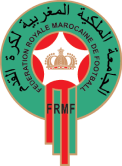
EFFECTIF
Gardiens
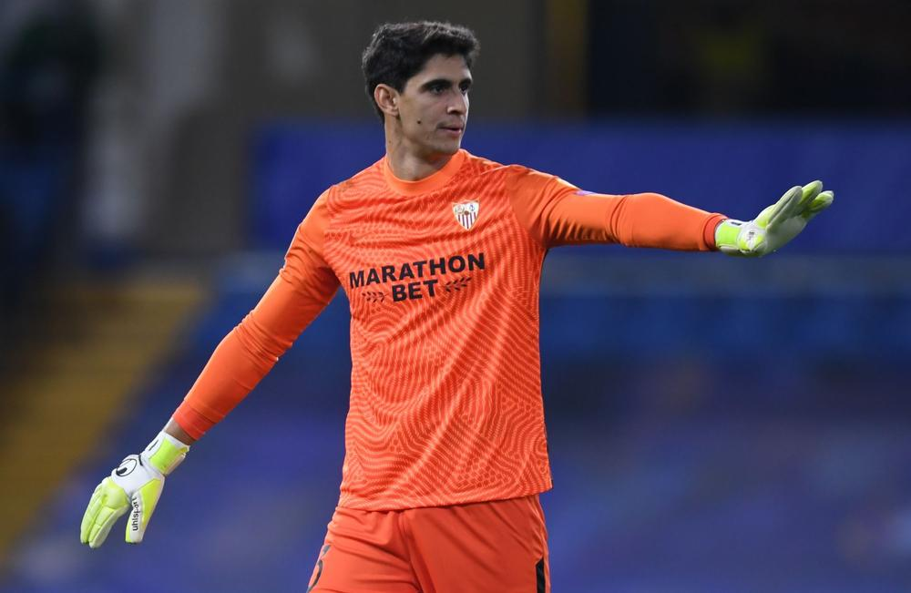
Défenseurs

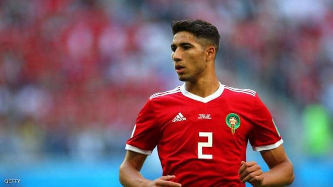

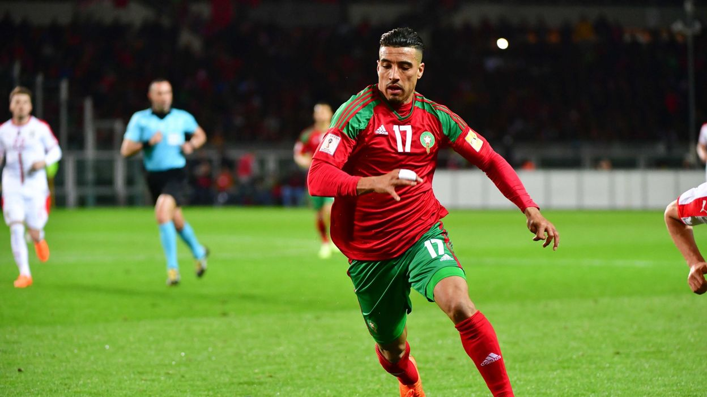
Milieux
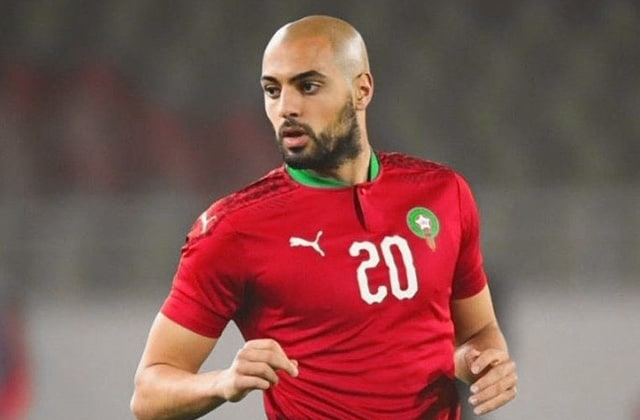
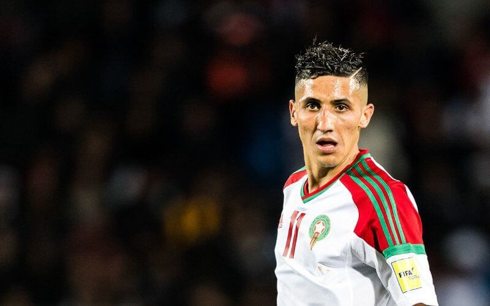
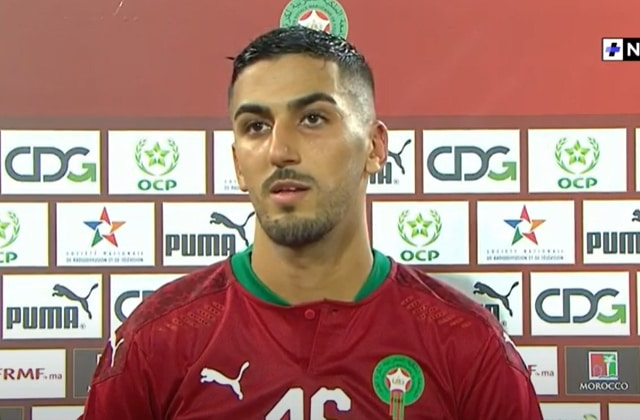
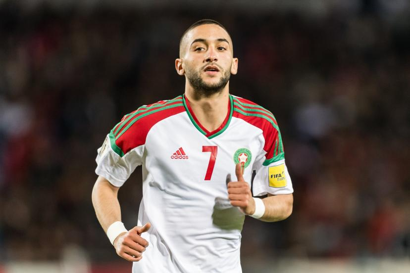
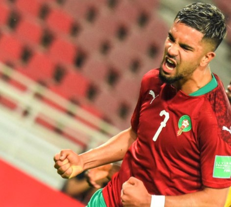
Attaquants

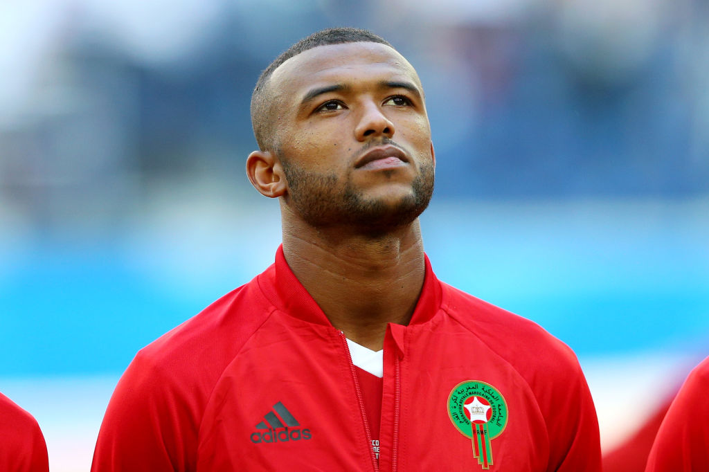
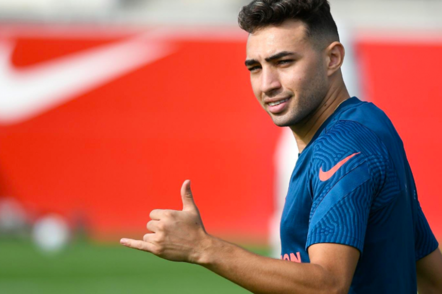
Sélectionneur
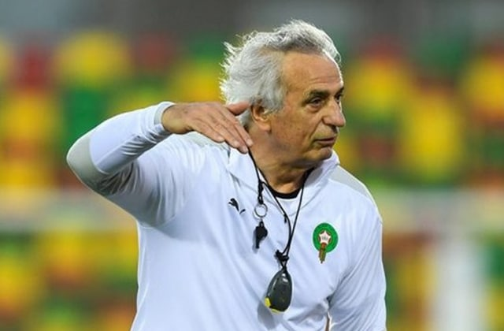
Vahid Halilhodžić
Nationalité:Bosnie-Herzégovine
Date de naissance/âge: 15 mai 1952 (69)
- 6
Victoires
(100%) - 0
Nul
(0%) - 0
Défaite
(0%)